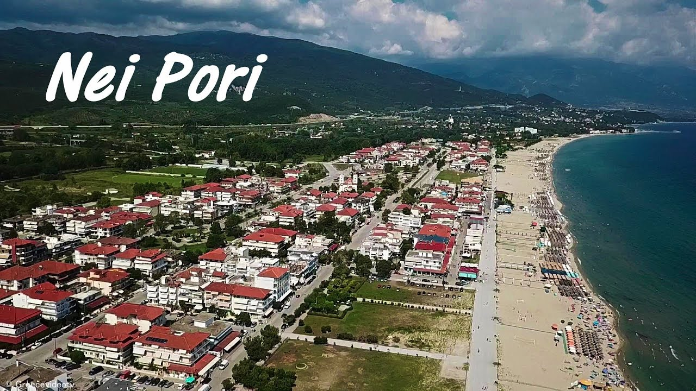

TRAVEL
What to Expect When Visiting Neoi Poroi Beach
A practical guide explaining what you should know before visiting this popular seaside destination.
John Smith · Aug 20, 2026 · 6 min read
Experiences, places, ideas and knowledge from our community

TRAVEL
A practical guide explaining what you should know before visiting this popular seaside destination.
John Smith · Aug 20, 2026 · 6 min read
A Weekend in Thessaly
John 5 min

What to Expect When Visiting Neoi Poroi Beach
Maria 4 min
Exploring Mount Olympos
Alex 6 min